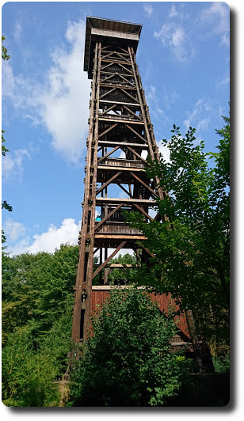
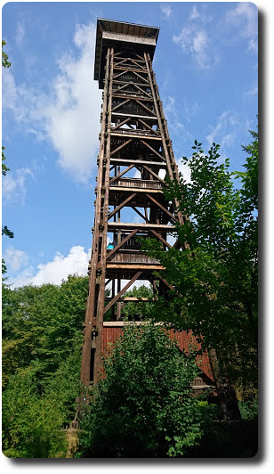
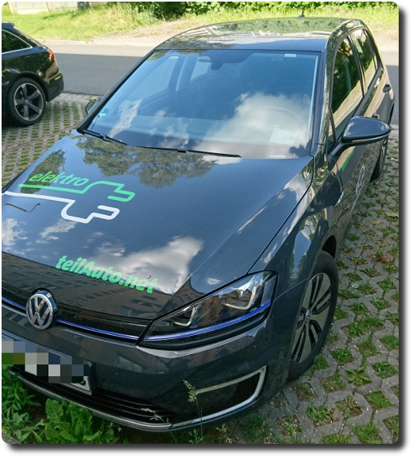
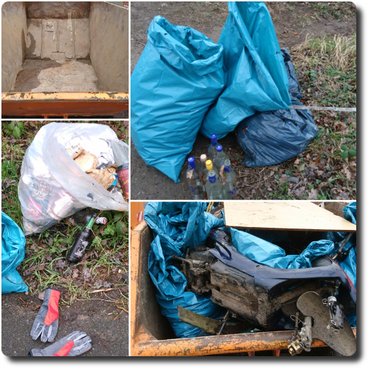
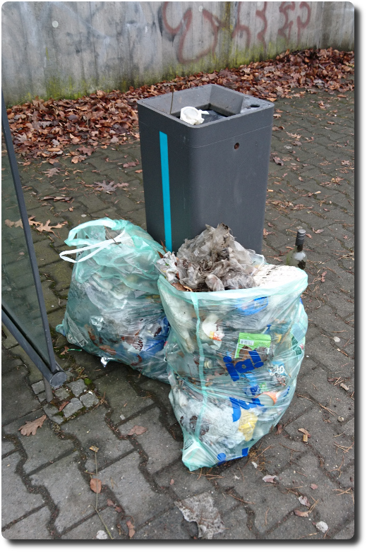

Tour zum Goetheturm
Heute haben wir eine Fahrrad-Rundtour von Langen zum Goehteturm und dem Frankfurter Flughafen gemacht.
Update: Leider ist der Goetheturm nicht mal einen Monat später abgebrannt. schnief.
Heute haben wir eine Fahrrad-Rundtour von Langen zum Goehteturm und dem Frankfurter Flughafen gemacht.
Update: Leider ist der Goetheturm nicht mal einen Monat später abgebrannt. schnief.
Heute habe ich mich heute bei BookCrossing angemeldet. Warum? Mir ist in letzter Zeit aufgefallen, dass viele öffentliche Bücherschränke (wo man Bücher kostenlos entnehmen und einstellen kann, siehe http://openbookcase.org) immer wieder geplündert werden. Manchmal sieht man dort Leute mir dem Rad stehen, volle Taschen mit Büchern gefüllt. Und diese Leute stopfen sich noch mehr Bücher aus dem Schrank in die Taschen. So viele Bücher, dass ich mir einfach nicht vorstellen kann, dass sie die Bücher wirklich alle selbst lesen werden. Glaub ich nicht.
Gestern waren wir seit langem mal wieder im Kino gewesen, zu Valerian - es hat sich gelohnt. Der Film ist klasse!
So toll, dass wir einige Tage später das erste mal überhaupt die Möglichkeit genutzt haben, den Film in 3D nochmal zu schauen. Das hat uns jedoch überhaupt nicht aus dem Hocker gerissen. Von daher bleiben wir ab jetzt beim guten alten 2D Kino-Erlebnis.
Aber zurück zum Film: Was mir hier neben der grandiosen Optik gefallen hat, ist der Humor, der mit recht wenig Sarkasmus auskommt. Das wird bei anderen SciFi-Filmen, besonders bei den ganzen Comicverfilmungen bei Marvel und Co einfach nur noch übertrieben. Hier hebt sich Valerian positiv ab. Kann man sich ruhig anschauen und genießen!
Den Trailer gibts hier.
Am vergangenen Wochenende waren wir zu einer Hochzeit eingeladen, außerdem stand seit langem ein Besuch bei unseren Verwandten an. Freude, Freude, denn so konnte ich endlich mal ein Elektroauto von Flinkster ausleihen - wir nahmen den e-Golf. Schnelles Fazit: sehr geil, es macht riesigen Spaß, lautlos zu beschleunigen und durch die Straßen zu rollen. Als Ergänzung zum Zug ist das e-Auto eine super Sache. Und Car-Sharing ist es sowieso. 👍😊
Obwohl ich heute nicht viel Zeit hatte, war die Woche insgesamt doch super, denn ich habe meinen Arbeitgeber dazu gebracht, unsren "Sozialen Tag" dieses Jahr dazu zu verwenden, in der Nähe des Flughafen Frankfurt herum aufzuräumen. 😇 Von der Frankfurter Energie- und Service GmbH werden wir dafür mit Müllsäcken, Handschuhen und Greifzangen ausgestattet. ✌ ☺ 💚
Hier der Link zu mehr Informationen: FES-Frankfurt
Ich hoffe, diese Aktion kommt bei den Kollegen gut an und wir werden richtig viel aufräumen. 🌻🍀🦋
Wir haben heute unser Insektenhotel für die 🐝 fertiggestellt. Bezugsfertig und luxuriös hängt es jetzt an der Tanne im Garten. 😊 Die Bauanleitung und etwas mehr Test findet ihr im Blog-Eintrag meiner besseren Hälfte.

Heute waren wir bei der Aktion "Sauberhaftes Langen" dabei. Die Stadt Langen hat die Säcke und Sammelstäbe ausgegeben. In anderthalb Stunden haben wir drei Müllsäcke voller Plastik, Verpackungen, Schnapsflaschen, Tetrapack und vielen anderen Müll gesammelt. Insgesamt waren wohl knapp 60 Leute dabei und es wurde ein ganzer Container gefüllt.
Unglaublich, wie viele Hundekot-Tüten im Gebüsch lagen. Was hat das denn bitte für einen Sinn, liebe Hundebesitzer? 😑
Auf jeden Fall gibt es ein gutes Gefühl, wenn man bei so einer Aktion mitmacht. Kann ich nur empfehlen.
Auf der Festplatte schlummern bei uns mittlerweile so viele Bilder, aber leider finden wir nie Zeit, diese auch mal anzuschauen. Daher habe ich mir irgendwann überlegt, beim Starten von Linux jedes mal ein neues, zufälliges Login-Hintergrundbild anzeigen zu lassen. Wie das bei der Verwendung von LightDM geht, habe ich hier aufgeschrieben.
Zum Feierabend stehe ich regelmäßig an dieser Bushaltestelle in Frankfurt, Gateway Gardens. Und dort sah es bis heute aus, wie auf einer Müllhalde: Flaschen, Dosen, Coffee-to-Go-Becher in Massen, diverse Verpackungen. Bis heute, denn das wurde mir jetzt zu viel. Also habe ich mich auf mein Rad geschwungen und bin mit zwei Müllsäcken, einer Harke und Handschuhen bewaffnet, hin, um da auszumisten.
Meine beiden Müllbeutel wurden ordentlich voll. Das Verrückteste, was ich fand, war ein grüner BH. Aber auch ein Regenschirm war dabei. Und Unmengen Coffee-to-Go Deckel. Der Wahnsinn! Leute, hört auf, diesen Dreck in die Gegend zu werfen!
So. Für eine Weile wenigstens sieht es hier wieder ganz ordentlich aus. 😊
Gestern haben wir wieder mal Edge of Tomorrow geschaut. Obwohl der Film echt Klasse ist, hat mich das Ende zum wiederholten Male ungläubig zurück gelassen: Wo kam dieser mysteriöse Energieimpuls her, der das Omega getötet hat, nachdem der Tag final zurück gesetzt wurde?!
Nach einiger Diskussion wurde es uns klar: Cage hat kurz vor seinem Tod die Granaten entsichert, die dann in das Omega gefallen sind. Das war ja offensichtlich. Der Punkt ist aber, dass diese Granaten auch beim letzten Zurücksetzen des Tages (durch Cage oder das Omega?) mit dem Omega zurück gesetzt wurden, weil sie ja in ihm drin waren. Und dadurch sind die Granaten gleich zu Beginn des zurückgesetzten Tages explodiert, was der Grund für den "mysteriösen Energieimpuls" war. Ha!
Klingt doch einleuchtend, oder?